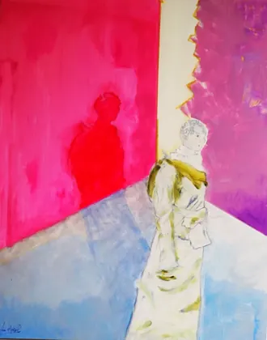

161ᵉ Salon de la Société versaillaise des artistes d’Île-de-France
Inauguración sábado 7 de noviembre, 15 h – 19 h · Entrada libre. Ana Ruiz presenta cuatro lienzos: Hypoderme, Épiderme, Deuxième peau y Peau d’âne.
Descubrir la exposición